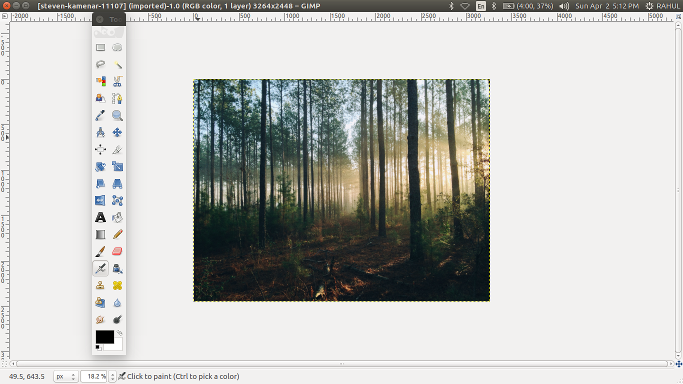

GIMP is the GNU Image Manipulation Program. It is used to edit and manipulate images. It can load and save a variety of image formats and can be used to convert between formats.
GIMP can also be used as a paint program. It features a set of drawing and painting tools such as airbrush, clone, pencil, and paint brush. Painting and drawing tools can be applied to an image with a variety of paint modes. It also offers an extensive array of selection tools like rectangle, ellipse, fuzzy select, bezier select, intelligent scissors, and select by color.
GIMP offers a variety of plug-ins that perform a variety of image manipulations. Examples include bumpmap, edge detect, gaussian blur, and many others. In addition, GIMP has several scripting extension which allow for advanced non-interactive processing and creation of images.
GIMP in ubuntu 16.04GIMP ships with a second binary called gimp-console. This binary is a console-only version and behaves as if gimp was called with the --no-interface command-line option.
On platforms with the D-Bus message bus system, GIMP will by default check if an instance is already running in this user session. If it detects that, it will pass all filenames given on the command-line to the already running GIMP instance and quit.